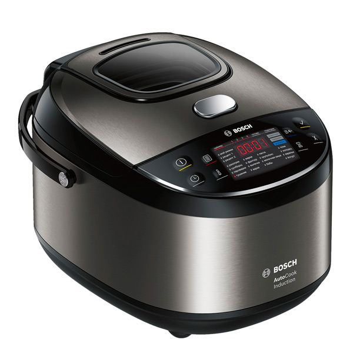
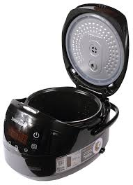
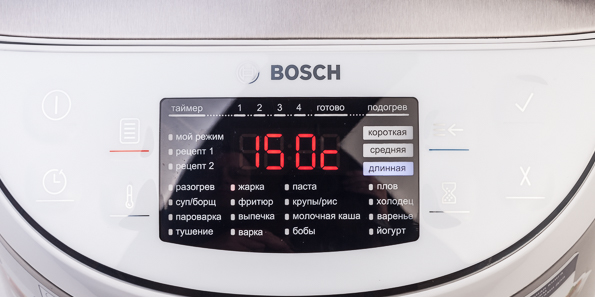
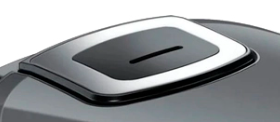

Мультиварка Leben 288-015
Предназначение
Мультиварка Leben 288-015 – это многофункциональное бытовое устройство, которое сочетает в себе функции множества кухонных приборов, таких как скороварка, пароварка, медленный кухонный комбайн, рисоварка и другие. Она предназначена для приготовления различных блюд, включая супы, каши, мясо, рыбу, овощи и выпечку. Мультиварки обычно оснащены различными программами приготовления, таймерами, регулируемой температурой и другими функциями, которые облегчают процесс приготовления пищи и позволяют достичь желаемых результатов.
Описание
- Бренд: Leben
- Модель: 288-015
- Цвет: серебристый
- Объем: 5 л
- Потребляемая мощность: 860 Вт
- Тип управления: электронное
- Материал корпуса: сталь
- Особенности: дисплей, регулировка времени приготовления, регулировка температуры
- Программы приготовления:
- выпечка
- жарка
- йогурт
- крупа
- молочная каша
- мультиповар
- паста
- плов
- приготовление на пару
- суп
- тушение
- фритюр
- отложенный старт
- Нагревательный элемент: ТЭН
- Подъёмный нагревательный элемент: нет
- Форма чаши: круглая
- Таймер: Да
- Поэтапное приготовление: Нет
- Блокировка от детей: Нет
- Нагревательный элемент: ТЭН
- Автоматические программы приготовления: 16
- Режим разогрева: Да
- Автоподогрев: Да
- Функция самоочистки: Нет
- Регулировка времени приготовления: Да
- Регулировка температуры: Да
- Размеры, вес:
- Вес: 2,52 кг
Конструкция
Управление и индикация
Функциональные особенности
Первый создавший мультиварку

Эти полезные приборы появились не сразу — вначале они были всего лишь рисоварками, причем долгие годы. Такие чудо-емкости были изобретены в тридцатых годах XX века, а создали это устройство для нужд военной промышленности. Дело в том, что во время военных конфликтов большое количество японских солдат естественно нуждались в пище, а много времени на ее приготовление не выделялось. Рис — очень полезный, сытный и привычный для людей упомянутой национальности продукт, поэтому в ответ на возросший спрос был создан аппарат, весьма отдаленно напоминающий современную мультиварку-скороварку. Это было нечто прямоугольное и деревянное, на дне которого устанавливались электроды для подогрева воды. В указанной жидкости и варился промытый рис. Таким образом, передвижная армейская кухня была оснащена прибором, который позволял накормить огромное количество солдат горячей пищей. Принцип работы прабабушки мультиварки Tefal был очень прост. Электроды подключались к току и вода начинала кипеть, крупа варилась, а позже, когда жидкость впитывалась, рис длительное время поддерживался в теплом состоянии. Но изобретение подходило исключительно для армии — в домашних условиях использовать его было попросту небезопасно да и неудобно — кастрюля отличалась немалыми размерами. Как бы то ни было, примитивная автоматизация процесса была осуществлена, кроме того, сократился и человеческий ресурс, требуемый для приготовления блюд на большое количество народу. Промежуточная цель была достигнута!
Элементы мультиварки
Мультиварка - это многофункциональное бытовое устройство, которое состоит из следующих компонентов:
- Корпус: это внешняя оболочка мультиварки, которая содержит все внутренние компоненты и обеспечивает их защиту. 
- Камера для приготовления пищи: это место, где размещаются продукты приготовления. Камера может быть выполнена из нержавеющей стали или других материалов, которые обладают хорошей теплопроводностью и устойчивостью к высоким температурам. 
- Внутренняя чаша или горшок: это съемный контейнер, в котором происходит приготовление пищи. Чаша обычно имеет антипригарное покрытие, чтобы предотвратить прилипание пищи и облегчить последующую очистку.
- Крышка: крышка мультиварки служит для удержания тепла и пара внутри камеры приготовления пищи. Она обычно оснащена уплотнительным кольцом или клапаном для регулирования давления и выхода пара.
- Панель управления: это интерфейс, позволяющий пользователю выбирать программы приготовления, настраивать время и температуру, а также управлять другими функциями мультиварки. Панель управления может быть сенсорной или иметь физические кнопки. 
- Электрический блок питания: это модуль, который обеспечивает электрическое питание для работы мультиварки. Он может включать в себя различные элементы, такие как трансформаторы, реле и датчики.
- Вентиляционные отверстия: они предназначены для обеспечения циркуляции воздуха внутри мультиварки и охлаждения ее компонентов. Вентиляционные отверстия также могут служить для выхода пара во время приготовления пищи. 
.jpg)
.jpg)
.jpg)
Прицип работы
Принцип работы мультиварки может варьироваться в зависимости от модели и режимов приготовления, но обычно она использует сочетание подачи тепла и пара, чтобы готовить пищу. Мультиварки обычно имеют различные программы приготовления, такие как жарка, тушение, варка, выпечка и т. д., которые позволяют приготовить разнообразные блюда с минимальными усилиями со стороны пользователя.
Основной функционал
Мультиварка имеет широкий набор функций, а именно :
- Приготовление разнообразных блюд: мультиварка предоставляет возможность готовить различные блюда, включая супы, горячие закуски, мясные и рыбные блюда, пасты, каши, десерты и многое другое. Она обычно предлагает разнообразные программы приготовления, которые автоматически настраивают время и температуру для конкретного рецепта.
- Разогрев и подогрев пищи: мультиварка может использоваться для быстрого разогрева и подогрева готовых блюд, соусов, супов и закусок. Она обладает функцией поддержания тепла, которая позволяет держать пищу горячей до момента подачи на стол.
- Замораживание и размораживание продуктов: некоторые модели мультиварок предлагают функцию разморозки, которая позволяет быстро и равномерно размораживать замороженные продукты. Это удобно, если у вас нет времени или забыли вытащить продукты заранее.
- Приготовление закусок и выпечки: мультиварка может использоваться для приготовления различных закусок, таких как попкорн, чипсы, тосты и т. д. Она также может выпекать хлеб, пироги, кексы и другие выпечку.
- Йогуртница: некоторые мультиварки имеют функцию приготовления йогурта. Они создают оптимальные условия для процесса брожения, позволяя вам приготовить свежий и вкусный йогурт в домашних условиях.
- Удобство и простота использования: мультиварка обычно имеет интуитивно понятный интерфейс с понятными символами и программами приготовления. Она также часто оснащена таймером, который позволяет задать время приготовления и забыть о нем до готовности блюда.
Плюсы использования:
- Универсальность: мультиварка предоставляет возможность готовить различные блюда, включая супы, мясные и рыбные блюда, каши, пасты, выпечку и многое другое. Она объединяет несколько функций (жарка, тушение, варка и т. д.) в одном устройстве, что делает ее универсальным инструментом на кухне.
- Экономия времени и энергии: мультиварка позволяет сэкономить время на приготовлении пищи. Она выполняет процессы приготовления быстрее, чем традиционные методы, благодаря использованию высокой температуры и равномерному распределению тепла. Кроме того, она обладает высокой энергоэффективностью, что помогает сократить расход электроэнергии.
- Удобство использования и программирования: мультиварка обычно имеет простой и интуитивно понятный интерфейс, что делает ее легкой в использовании даже для начинающих пользователей. Она часто предлагает различные программы и режимы приготовления, которые автоматически настраивают время и температуру в соответствии с выбранным рецептом.
- Равномерное приготовление блюд: мультиварка обеспечивает равномерное нагревание и приготовление пищи благодаря специально разработанным системам циркуляции воздуха и контроля температуры. Это позволяет получать качественные и однородные блюда без пережаривания или недоваривания.
- Возможность использования задержки старта и функции поддержания тепла: многие модели мультиварок предлагают функцию задержки старта, которая позволяет задать время начала приготовления заранее. Также они могут иметь функцию поддержания тепла, которая позволяет держать приготовленную пищу горячей до момента подачи на стол.
Минусы использования:
- Ограничения в приготовлении определенных блюд: хотя мультиварка предлагает широкий спектр функций, некоторые блюда могут лучше приготавливаться с использованием других методов, таких как гриль, жарка на сковороде или духовка. Некоторые виды пищи, требующие особого воздействия (например, хрустящая корочка), могут быть сложнее достичь в мультиварке.
- Изменение вкуса и текстуры продуктов: при использовании мультиварки некоторые продукты могут изменить свою текстуру или вкус. Например, мясо, приготовленное в мультиварке, может быть более мягким или менее хрустящим по сравнению с жареным на сковороде.
- Необходимость изучения функционала: мультиварки имеют различные программы и режимы приготовления, поэтому для использования всех их возможностей может потрребоваться некоторое время на изучение и освоение функционала. Это может быть сложно для пользователей, не знакомых с устройствами подобного типа.
- Обслуживание и чистка: мультиварка требует периодической очистки и обслуживания. Некоторые части, такие как крышка или съемная чаша, могут требовать регулярной чистки после использования для поддержания гигиены и предотвращения накопления запахов или остатков пищи.
- Занимает пространство на кухне: некоторые модели мультиварок могут занимать значительное пространство на кухне из-за их размера или дополнительных функций. Это может быть проблематично для пользователей с ограниченным пространством на кухне.
Актуальность
Мультиварка остается актуальным и популярным устройством на кухне благодаря своей универсальности и удобству использования. Мультиварка предлагает широкий спектр функций и программ, позволяющих готовить разнообразные блюда – от супов и каш до мясных и рыбных блюд, выпечки и десертов. Она объединяет несколько функций в одном устройстве, что делает ее универсальным инструментом на кухне. Кроме того, мультиварка обычно имеет простой и интуитивно понятный интерфейс, что делает ее легкой в использовании даже для начинающих пользователей. Она предлагает предустановленные программы и режимы приготовления, которые автоматически настраивают время и температуру в соответствии с выбранным рецептом. Мультиварка также экономит время и усилия на приготовлении пищи. Она обладает функцией быстрого приготовления благодаря использованию высокой температуры и равномерному распределению тепла. Это позволяет сэкономить время и энергию, особенно в сравнении с традиционными методами приготовления. Благодаря своей удобности и эффективности, мультиварка продолжает быть актуальным решением для многих современных кухонь. Она помогает сэкономить время, силы и пространство, предлагая широкий спектр возможностей приготовления пищи.